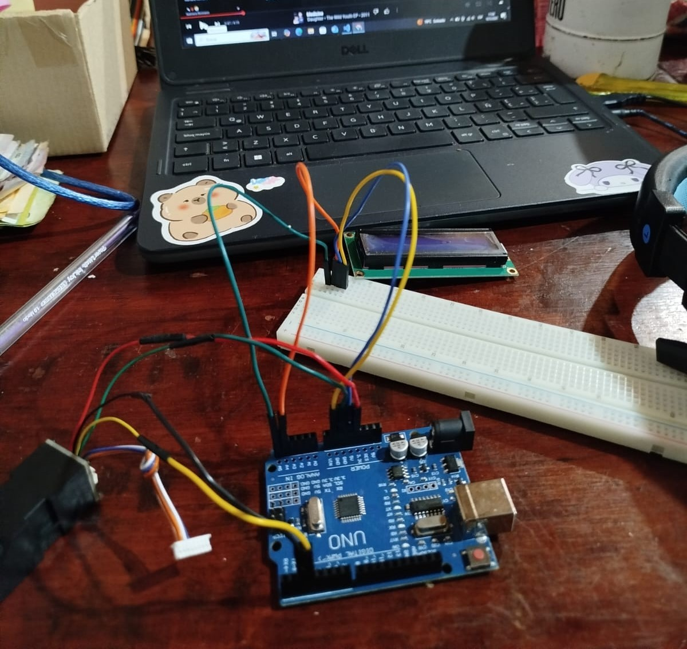
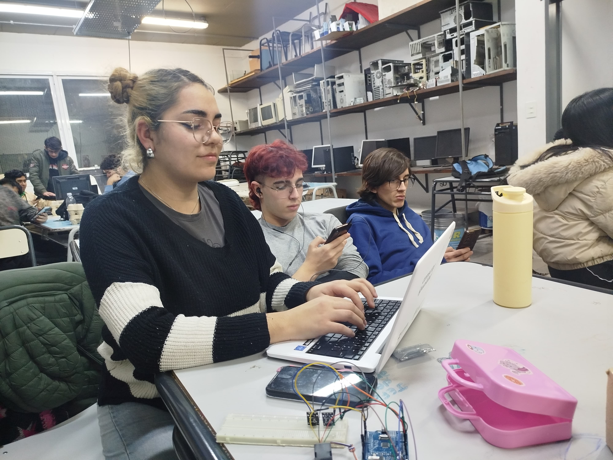

Innovación tecnológica al servicio de la educación técnica. En el marco de la modernización institucional y el fortalecimiento del control administrativo, presentamos un sistema automatizado de toma de asistencia mediante lector de huella digital, basado en tecnología Arduino.
Este desarrollo no solo refleja la capacidad técnica de nuestros estudiantes y docentes, sino que también demuestra cómo la tecnología puede integrarse en los procesos escolares para mejorar la gestión institucional y fomentar la innovación desde las aulas.
Encargado de la Pagina web